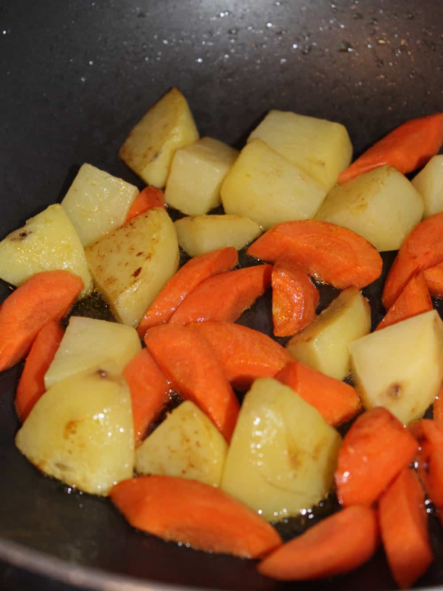
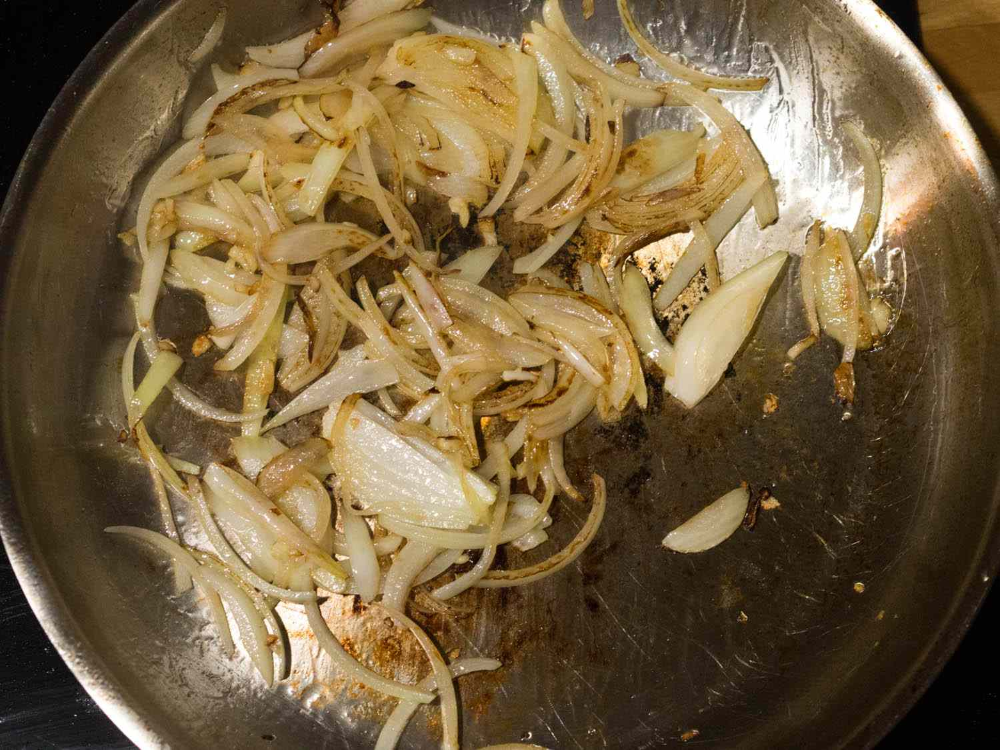
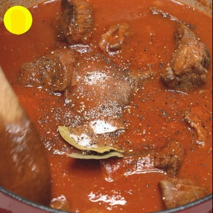
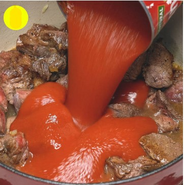
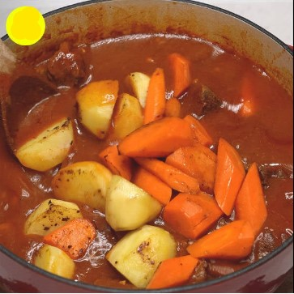
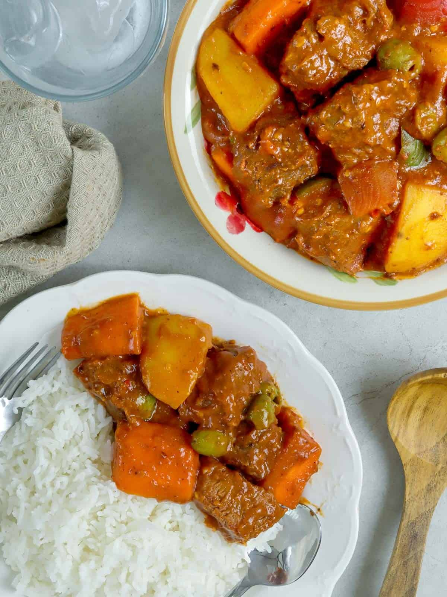

Beef Kaldereta

Description
Beef Kaldereta (or Caldereta) is a Filipino spicy tomato-based beef stew
loved by many Filipinos. This spicy dish is commonly served on holidays
and special occasions but believe me, there is no need to wait for a
special event to enjoy this classic Filipino dish.
Traditionally, Caldereta is prepared using goat meat. But since it is
rather difficult to come by, I opted to cook it with the more easily
available meat...beef.
Beef is actually the more preferred meat by many as goat meat can be an
acquired taste due to it's 'gamey' flavor or what we term as 'maanggo' in
Tagalog.
And because this dish is so loved in the Philippines, especially in the
north, that a lot of people cook it using whatever meat they like or is
available, like pork and chicken.
The ingredients involved are also not all that difficult. Tomato sauce and
some veggies like carrots, bell peppers, and potatoes, just like most
tomato-based stews.
Ingredients
- 2-3 tablespoons oil
- 2 medium potato - cubed
- 2 medium carrots - sliced
- 2 cloves garlic - minced
- 1 small onion - chopped
- 1 pound beef brisket or 2 pounds ribs
- 2 tablespoons fish sauce
- 2 cups water (or more)
- 3 pieces bay leaves
- 5-6 tablespoons tomato paste
- 3-4 tablespoons liver spread
-
1 chili pepper or ⅛ teaspoon chili flakes (or more depending on one's
taste)
- 1 cup green/red bell pepper - cut into squares
- 1 cup green peas
- ½ cup grated cheese
- Salt and pepper
Steps on how to cook Beef Kaldereta
-
Heat oil over medium heat in a pot or deep pan, add the potatoes and
carrots and cook until edges are slightly browned. Remove potatoes and
carrots from oil and set aside.

-
In the same pan, saute the garlic and onion until limp. Add the beef
chunks and fish sauce then cook for 5 minutes or until slightly browned.

-
Add water and bay leaves. Season with pepper and bring to boil. Once it
boils, turn down the heat to low and cover with the lid. Let it cook for
50-60 minutes or until meat is tender, stirring occasionally and adding
more water as needed.

-
Once the meat is tender, uncover and let it boil to reduce liquids to
half. Add the tomato paste, chili and liver spread and let it cook for 5
minutes.

-
Add back the cooked potatoes and carrots and the rest of the vegetables
and cook for another 5 minutes. Lastly, add the grated cheese and season
again with salt and pepper as needed.

- Serve hot with steamed rice.

Back to Top
Back to Main